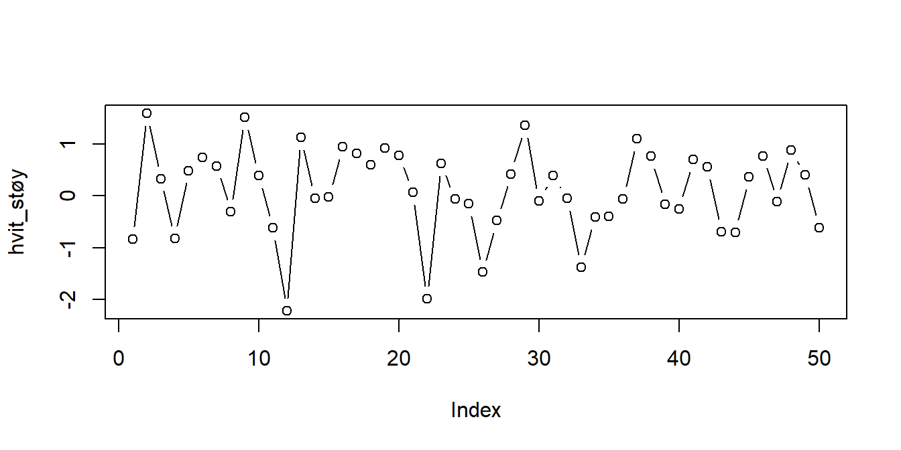
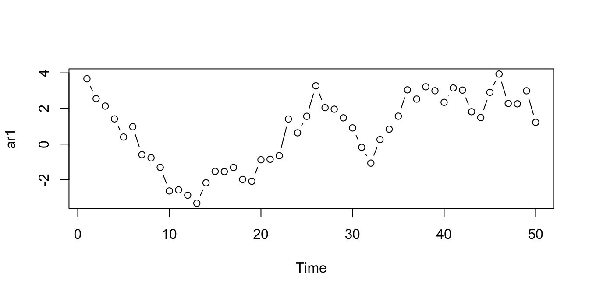
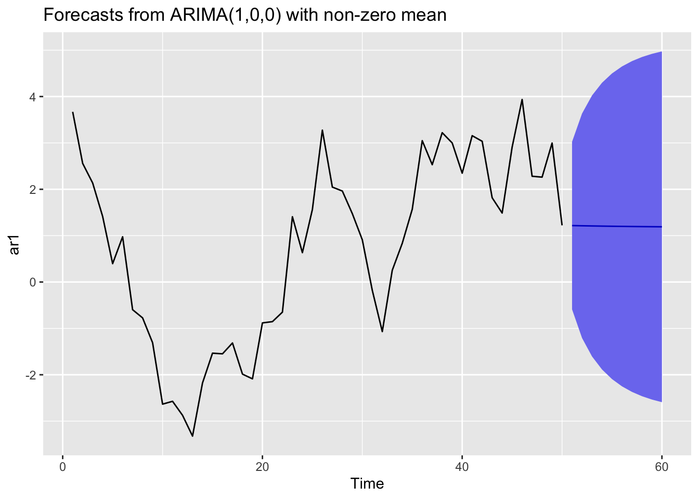

6.3 AR(p)
6.3.1 Kontrollspørsmål
- Hva er definisjonen på en Hvit-støy-prosess?
- Hva er definisjonen på en AR(1)-prosess?
- Hvilken effekt har parameteren \(\phi\) på egenskapene til en AR(1)-prosess?
- Hva er forskjellen på en AR(1)-prosess og en generell AR(\(p\))-prosess?
- Hvorfor kan vi si at AR(\(p\)) er en utvidelse/generalisering av hvit støy?
6.3.2 R-øving
1. Simulere. La oss først se hvordan vi kan simulere noen realiseringer fra disse tidsrekkene. Hvit støy består av ukorrelerte trekninger som alle har samme forventningsverdi og varians, noe vi kan simulere i R ved å bare trekke \(n\) uavhengige observasjoner fra hvilken som helst fordeling og kalle det en tidsrekke. For eksempel har vi tidligere trukket standard normalfordelte observasjoner ved hjelp av rnorm()-funsksjonen. La oss gjøre det igjen, og plotte det som en tidsrekke. Merk at din trekning ikke vil være identisk som den under:
n <- 50
hvit_støy <- rnorm(n)
plot(hvit_støy, type = "b")
Vi kan bruke funksjonen arima.sim() til å simulere tidsrekker fra AR-modellen (og den mer generelle ARIMA-modellen, mer om det senere). Du kan for eksempel simulere \(n\) observasjoner fra en AR(1)-prosess med \(\phi = 0.95\) ved hjelp av følgende kommandoer:
ar1 <- arima.sim(model = list(ar = 0.95), n)
plot(ar1, type = "b")
I det siste eksempelet trekker arima.sim()-funskjonen hvit-støy-prosessen \(u_t\) fra rnorm()-funksjonen, men det kan vi endre på hvis vi vil, se hjelpesiden ?arima.sim. Videre kan vi bruke denne funksjonen til å simulere fra hvit støy ved å sette model-argumentet til en tom liste (model = list()), eller vi kan simulere fra en AR(2)-prosess med \(\phi_1 = 0.2\) og \(\phi_2 = 0.1\) ved å sette model = list(ar = c(0.2, 0.1)).
2. Estimere.
La oss i første omgang si at vi har observert tidsrekken ar1 som vi simulerte over, at vi mistenker at den følger en AR(1)-prosess \(Y_t = \phi Y_{t-1} + u_t\), og at vi ønsker å estimere den ukjente parameteren \(\phi\) ved hjelp av observasjonene. Som vi antydet i AR-videoen kan vi i dette tilfellet betrakte det som et regresjonsproblem med \(Y_t\) som responsvariabel og \(Y_{t-1}\) som forklaringsvariabel. La oss lage en data.frame med disse to kolonnene, og se hva vi får når vi bruker lm()-funksjonen. .
df <- data.frame(Y = ar1[2:n],
lagged_Y = ar1[1:(n-1)])
summary(lm(Y ~ lagged_Y, data = df))##
## Call:
## lm(formula = Y ~ lagged_Y, data = df)
##
## Residuals:
## Min 1Q Median 3Q Max
## -1.5400 -0.6819 -0.1418 0.6725 1.9269
##
## Coefficients:
## Estimate Std. Error t value Pr(>|t|)
## (Intercept) 0.04664 0.13890 0.336 0.739
## lagged_Y 0.87116 0.06494 13.415 <2e-16 ***
## ---
## Signif. codes: 0 '***' 0.001 '**' 0.01 '*' 0.05 '.' 0.1 ' ' 1
##
## Residual standard error: 0.9106 on 47 degrees of freedom
## Multiple R-squared: 0.7929, Adjusted R-squared: 0.7885
## F-statistic: 180 on 1 and 47 DF, p-value: < 2.2e-16Vi ser at vårt estimat av \(\phi\), som i regresjonutskriften er koeffisienten til lagged_Y, er i nærheten av den sanne verdien 0.95, men med så få observasjoner kan det godt hende at ditt estimat er noe forskjellig. Poenget er: vi kan bruke lineær regresjon til å estimere koeffisientene i en AR-modell basert på observasjoner.
Som i forrige oppgave er pakken forecast svært nyttig for estimering og predikering:
library(forecast)Denne pakken inneholder en funskjon Arima for å estimere koeffisientene i en AR-modell (egentlig den mer generelle klasssen av ARIMA-modeller som vi kommer tilbake til senere). Denne funksjonen kan vi andvende direkte på tidsrekken ved å skrive
Arima(ar1, order = c(1, 0, 0))## Series: ar1
## ARIMA(1,0,0) with non-zero mean
##
## Coefficients:
## ar1 mean
## 0.8916 1.1769
## s.e. 0.0601 1.0403
##
## sigma^2 estimated as 0.8496: log likelihood=-66.64
## AIC=139.29 AICc=139.81 BIC=145.03I første omgang kan vi legge merke til at vi har spesifisert hvilken modell vi ønsker å estimere gjennom argumentet order = c(1, 0, 0), der ett-tallet angir AR-modellens orden \(p\), som i dette tilfellet er 1. Dersom du mistenker at AR(2)-modellen gir en bedre beskrivelse av tidsrekken din, kan du endre til order = c(2, 0, 0). Vi kommer tilbake til spørsmålet om hvordan du kan velge den beste modellen for et gitt praktisk problem.
Legg merke til at de to estimatene ikke er identiske selv om vi bruker det samme tidsrekken. Det er fordi arima()-funksjonen ikke bruker minste kvadraters metode til å regne ut estimatene (slik lm() gjør), men heller bruker en annen estimeringsteknikk som heter maximum likelihood.
3. Predikere. For predikering bruker vi funksjonen forecast(), som tar en estimert modell som input, og som bruker modellen til å skrive frem tidsrekken ved å estimere fremtidige verdier.
I kodesnutten under bruker vi den simulerte tidsrekken, og estimerer en AR(1)-modell som over som vi lagrer i objektet ar1_estimat. Så bruker vi det som argument i forecast(), der vi også spesifiserer hvor mange tidssteg fremover vi ønsker å predikere, her velger vi h = 10. I tillegg kan funksjonen regne ut prediksjonsintervall med en gitt dekningsgrad, her velger vi level = 0.95 for \(95\%\) prediksjonsintervall. Resultatet lagrer vi i objektet prediksjon.
ar1_estimat <- Arima(ar1, order = c(1, 0, 0))
prediksjon <- forecast(ar1_estimat, h = 10, level = 0.95) Vi kan plotte resultatet i en pen liten figur ved å bruke funksjonen autoplot som under:
# Plotter den opprinnerlige tidsrekken, sammen med prediksjon og
# prediksjonsintervall
autoplot(prediksjon)